Level up
for real.
The console you’re glad
they asked for.
Braino! is a learning console that takes over a device entirely: an ESP32 touchscreen board, the Attaky Cyber Deck Plus, or the Anbernic RG40XX V handheld. 40+ games — handwriting, maths, flags, the periodic table, chess across the room — with new ones on their way, and most of them grow with each player.
No accounts, no browser, and nothing collected about the player. The whole thing is GPL-3.0: read it, change it, build your own from it.
Pick your device.
The same games, the same players and the same rules on every one, and one version number for all of them.
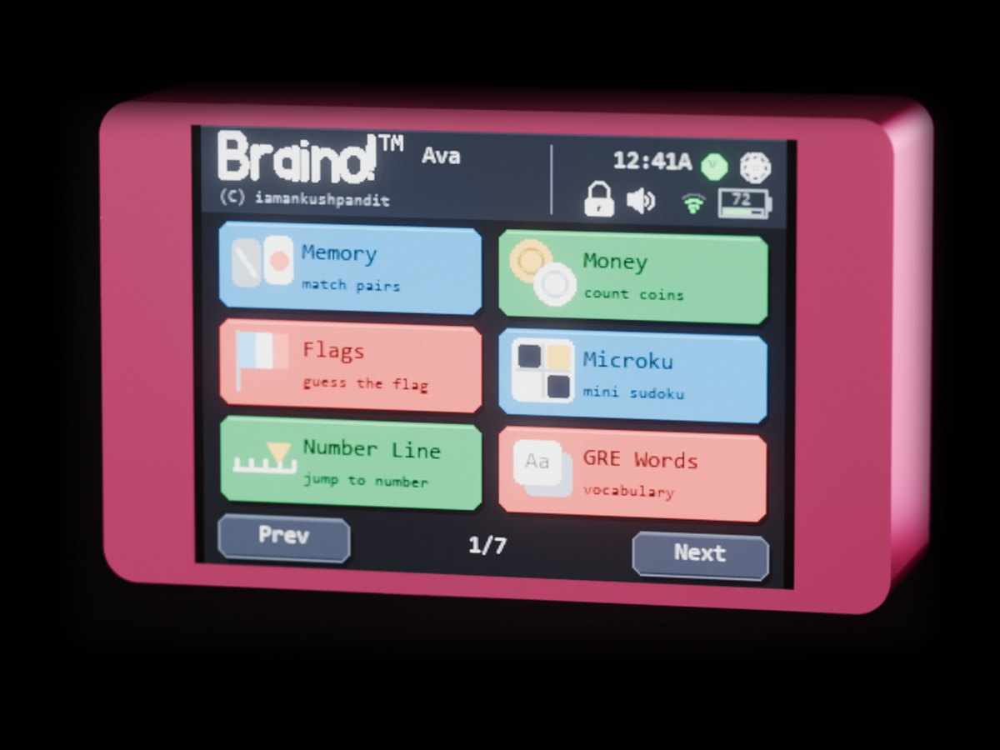
An ESP32 board 2.8, 3.2 or 4 inch. Install Braino from this page in about a minute.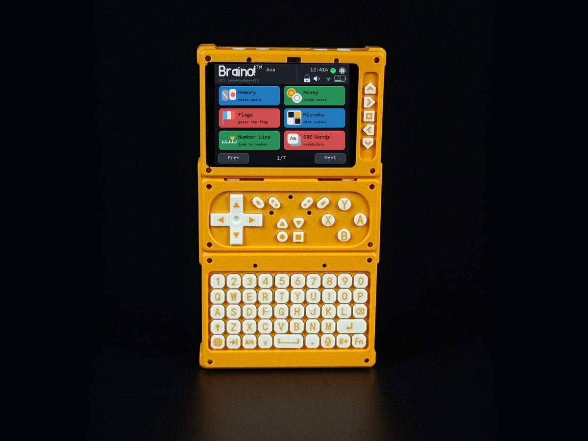
Attaky Cyber Deck Plus An ESP32-S3 handheld with a gamepad and a keyboard. Braino installs from Attaky’s firmware site or from this page.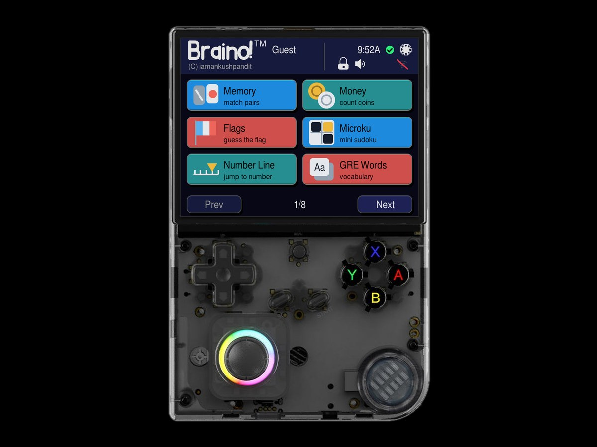
Anbernic RG40XX V A retro handheld that becomes Braino and nothing else. Write a card, put it in, switch it on. Buttons, a TV and headphones.The whole
handheld.
On the Anbernic RG40XX V, Braino is not an app in a menu. The card holds Braino and the Linux under it, and nothing else: no menu to leave to, no other system behind it. Switch it on and the first picture is Braino.
- Every game and every control by the buttons: the d-pad moves, A presses, B goes home.
- Drawn at the screen’s own 640×480, with smooth text.
- A television over HDMI, so a whole room can watch the game.
- A headphone jack, for a quiet house.
No ROMs and no emulator. Braino lives on its own card: put the handheld’s original card back and it is as it was.
A deck with
a keyboard.
The Attaky Cyber Deck Plus is an ESP32-S3 handheld built from snap-together modules: a 2-inch touchscreen, a gamepad, a keyboard, a battery and a speaker. Braino uses all of it.
- The gamepad reaches every control on every screen, and every game.
- The keyboard types a player’s name, the PIN and the Wi-Fi password.
- The battery badge reads the Power module’s own gauge.
One image for every Attaky build: Braino looks at boot for the modules that are clipped on, and uses what it finds.
A whole console
in 4 MB.
On a touchscreen board Braino is the firmware: an ESP32 already soldered to the back of a screen. Get started compares the boards; plug one into a computer and install Braino from this page in about a minute.
- 2.8-inch boards, resistive or capacitive touch
- 3.2-inch boards, resistive touch
- 4-inch boards, resistive touch
It runs on the bare board exactly as it arrives — no case, no battery, nothing to print. The case is there if you want one.
Three kinds of device.
One console.
An ESP32 touchscreen board in a case you print in any colour, the Attaky Cyber Deck Plus with its gamepad and keyboard, and the Anbernic RG40XX V handheld. The same games, the same players and the same privacy on every one, and every screen is the firmware's own.
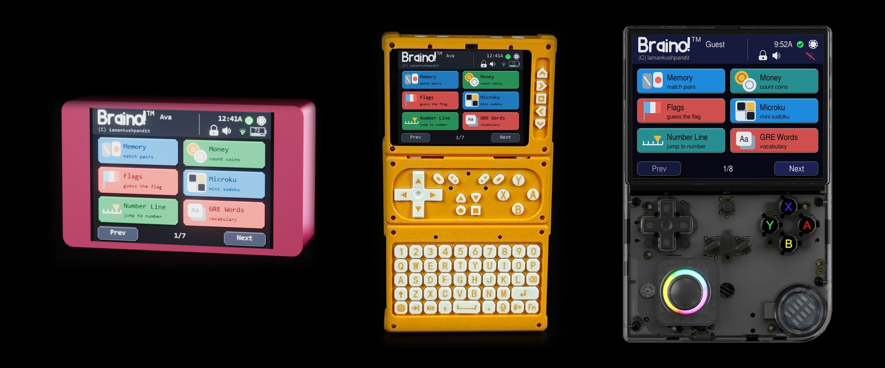
The boards come in 2.8, 3.2 and 4 inch, shown below at their true relative sizes — the case footprints are measured from the printable meshes in this repository.
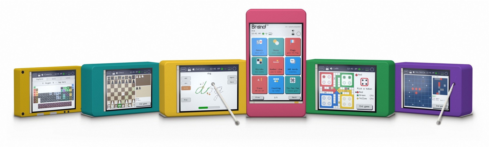
The board's screens, redrawn on a computer from the exact rectangles, fonts and colours in the C++ source: the board does not wire the panel's MISO line, so a true screenshot is not possible there. The flag artwork is the real pixel data the device draws from. The handheld pictures on this page are the console's own frames.
It grows with
each player.
Most of the games are courses. Each player has a level in each one, and it moves: two right in three holds a player where they are, more climbs, fewer slips back. A missed question comes back a few questions later, and every question in a level comes round before any comes twice.
Leave a game by mistake and it is still there. Come back and Braino asks: carry on, or start a new game?
A step up is celebrated. A step down is not announced; the questions just get easier.
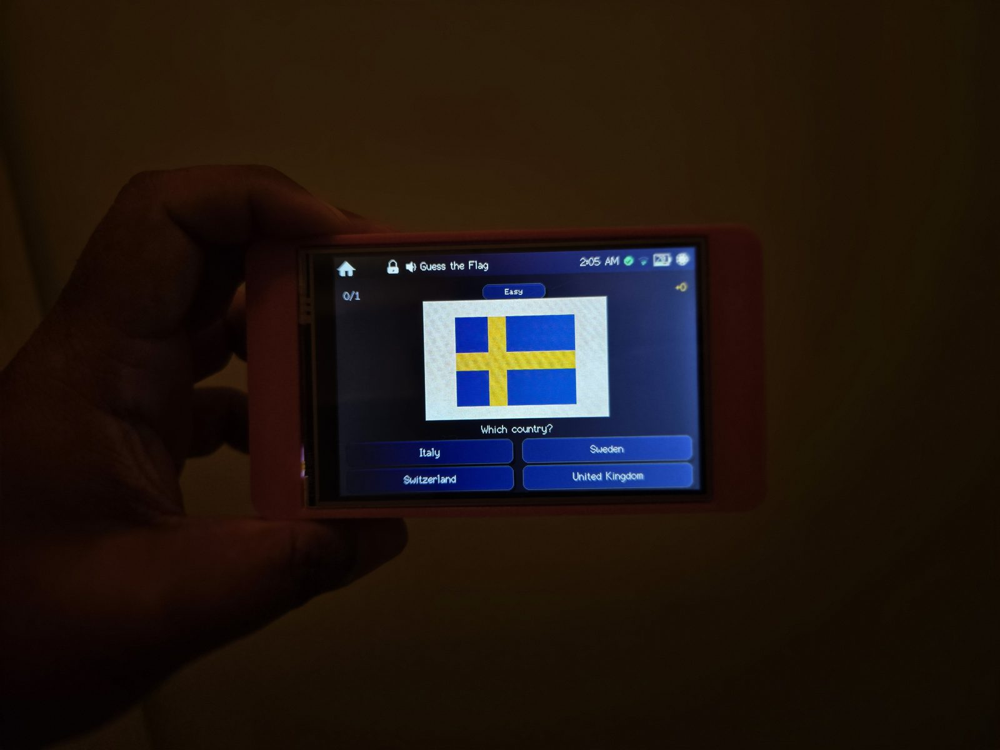
An administrator
curates the games.
Up to five player profiles plus a Guest that saves nothing. The administrator chooses which games each player sees, so one console can be a different console for every player. Settings, Wi-Fi and the system information are for the administrator alone, behind a PIN: a player sees only their games.
No accounts. No feed. Nothing to scroll.
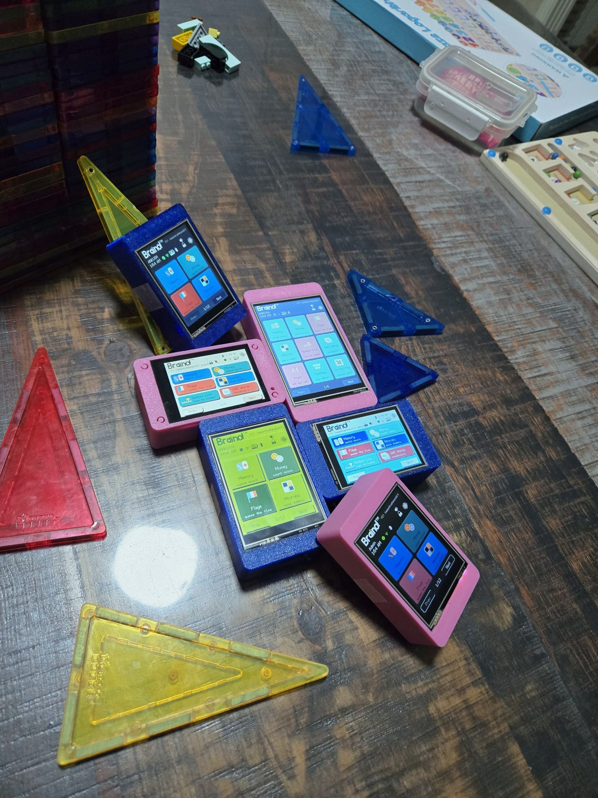
They find
each other.
Chess, Go, Sea Battle and Backgammon for two, Ludo for up to four, across consoles in the same room over Bluetooth Low Energy. A lobby shows who is there, who is free and who is already playing, and an invitation stands until it is answered.
It is a beacon, not pairing: no phone in the middle, no internet. The beacon is off by default, and only an administrator turns it on.
Dice are never sent. Every console rolls for itself, and checks every move it hears against its own board.
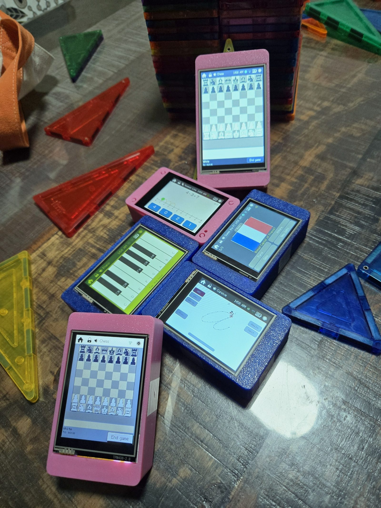
Picked up by.
The board's case
is in the repo.
Room inside for a 3000 mAh battery and a small speaker. The lid carries the speaker grille, the embossed mark and slots that reach the BOOT and RESET buttons.
Pink is the house colour. Print yours in anything.
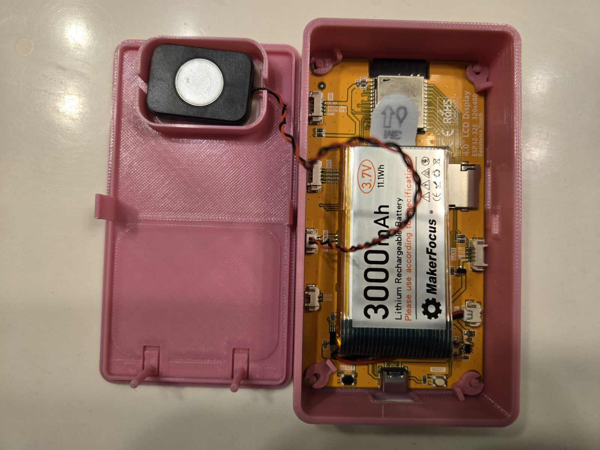
Get started.
Pick your device.
Braino runs on ESP32 touchscreen boards, the Attaky Cyber Deck Plus and the Anbernic RG40XX V. None needs soldering, and each takes a few minutes.
A touchscreen board.
Braino runs on a CYD — a “Cheap Yellow Display”: a touchscreen with a small computer, an ESP32, already built onto the back of it. Get a board, then install Braino onto it from this page. There is nothing to solder, wire or assemble.
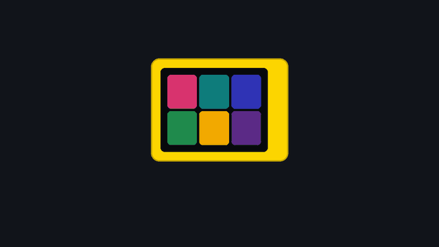
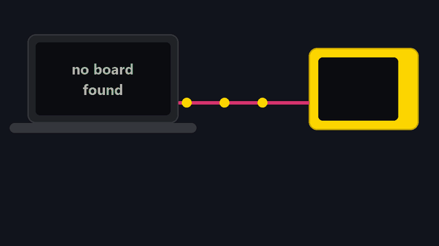
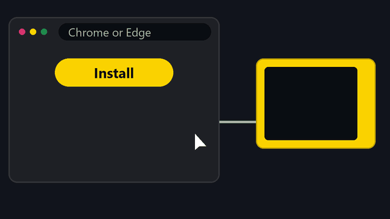
Which board
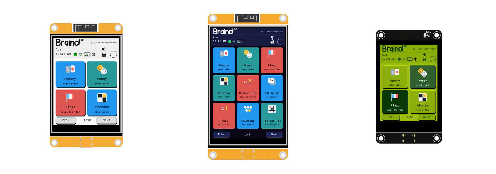
Three boards, three of the nine themes. Board artwork by LCDWIKI; the screens are Braino's own.
{{BUY_PICK}}| Screen | Board | Touch | USB | Good to know | In the installer | Listing |
|---|
Resistive or capacitive? A resistive screen responds to a press — a fingertip, or the stylus that usually comes in the box. A capacitive screen responds to a light touch, like a phone. The two 2.8-inch resistive boards look alike: the classic CYD has a second, micro-USB socket, and it is the one with no battery socket.
Boards sometimes change under the same name. If your board looks different from the pictures, check the model printed on its back against the list in the Install tab: the wrong firmware gives a blank or wrongly coloured screen rather than an error.
Nice to have, never required
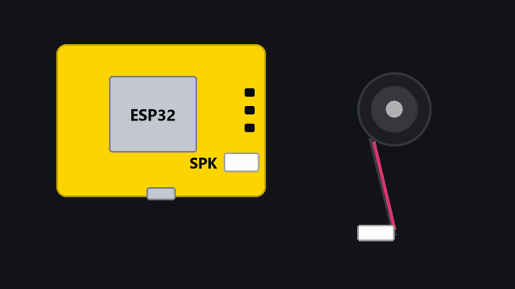
A small speaker
For sound. Most of these boards have a two-pin 1.25 mm speaker socket; without a speaker Braino simply plays silently. Either of these works: 1 W, 8 Ω or 3 W, 4 Ω.
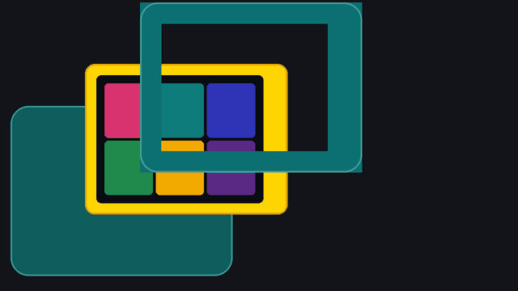
A case
The files for the 2.8, 3.2 and 4-inch boards are in the repository, so anyone with a 3D printer can make one. The case files
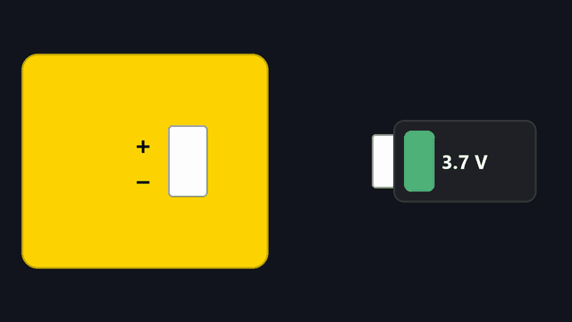
A battery
Boards with a battery socket take a single-cell 3.7 V lithium battery with a two-pin 1.25 mm plug, and charge it over USB. The maintainer uses this 3000 mAh one — the size the printed case has room for. Before plugging any battery in, check that its red wire lines up with the + mark beside the socket: plugs of the same size come wired both ways round, and a reversed battery can damage the board. Without one, the board runs from any USB charger or power bank.
Questions about the boards
Do I need to solder or wire anything?
No. The board arrives with the screen and the computer already joined. Plugging in a USB cable is the only connection.
Can I install it from a phone or a tablet?
No. Installing uses Web Serial, which only desktop Chrome, Edge and Opera offer. After that the console needs no computer at all.
What does “flash” mean?
It is the maker word for installing software onto a board like this one, and the Install tab does it for you. Installing an update later keeps the players, scores and touch calibration already on the console, unless you choose to erase it.
Do I need a 3D printer?
No. Braino runs on the bare board exactly as it arrives; the case is optional.
Is it open source?
Yes, under GPL-3.0: read it, change it, build your own from it. There is no account to make.
Something went wrong.
Ask on r/gume_braino or open an issue, and say which board you have and what the screen shows.
Attaky Cyber Deck Plus.
A handheld that arrives built: an ESP32-S3 Core with a 2-inch touchscreen, a gamepad, a 48-key keyboard, a battery and a Media I/O module with a speaker and a microSD slot. Braino installs from Attaky’s own firmware site.
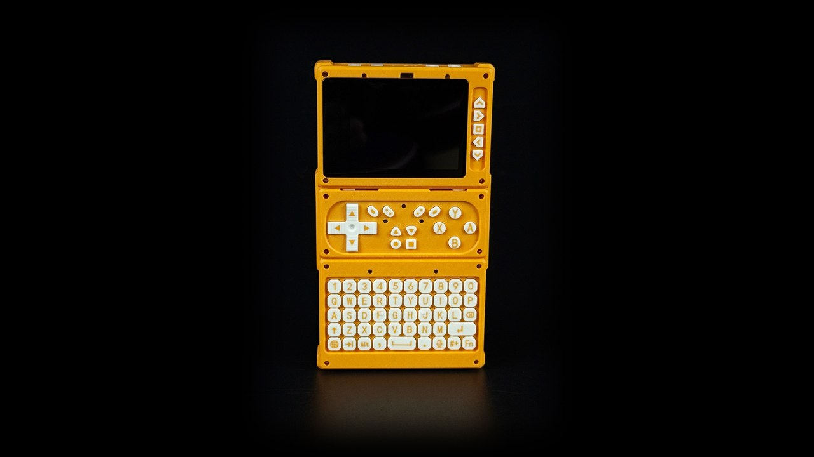
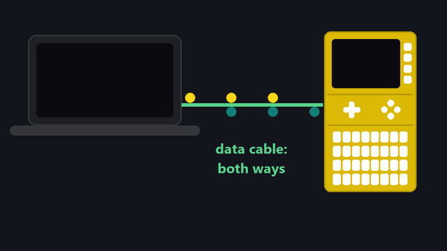
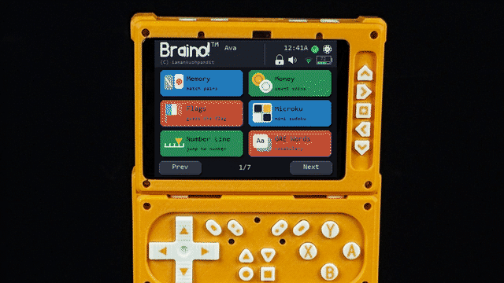
The buttons
D-pad and A
The d-pad moves a selector from control to control and square to square, and A presses what it is on. Every game plays this way, the board games and the tracing games included. On a quiz with four answers, the four round keys answer it straight away: each answer wears its key’s symbol.
B, L1, R1 and Menu
B goes Home. L1 and R1 turn the launcher’s pages, and Menu moves between tabs. Every button is a shortcut: Home, the pages, the padlock and the speaker are all on the screen too.
L2, R2 and power
L2 mutes and R2 locks. A short press of the power key locks too.
The keyboard
Types a player’s name, the PIN and the Wi-Fi password. Take it off and the on-screen keypad comes back.
Questions about the deck
Which modules does it need?
Only the Core. The keyboard, the gamepad and the battery are used when they are clipped on. The SD slot and the speaker need the Media I/O module; on a build with the LoRa/GPS or FM/AM module instead, Braino plays silently.
Can I take a module off?
Yes. Braino looks for the modules every time it starts. Take the keyboard off and the on-screen keypad comes back.
Anbernic RG40XX V.
A retro handheld with a 4-inch screen, a d-pad and buttons, an HDMI output and a headphone jack. Braino goes on a microSD card of its own and becomes the whole system: no menu, no other system behind it, and nothing on the screen from power-on until Braino’s splash.
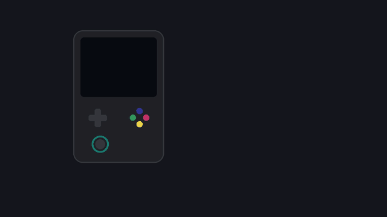
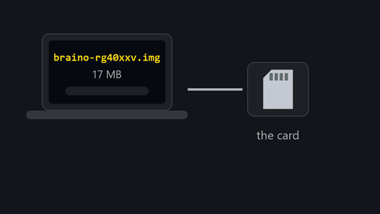
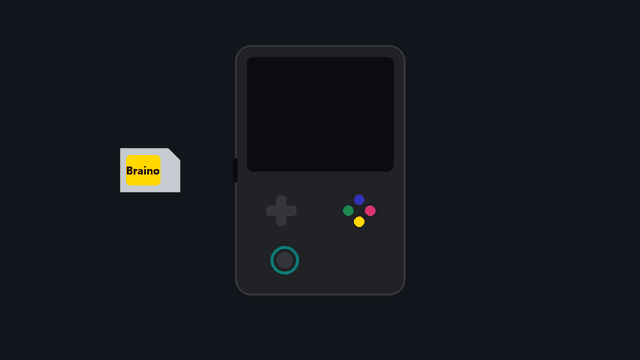
The buttons
D-pad and A
The d-pad moves a selector from control to control and square to square, and A presses what it is on. Every game plays this way, the board games and the tracing games included.
B, L1 and R1
B goes Home. L1 and R1 turn the launcher’s pages. Every button is a shortcut: Home, the pages, the padlock and the speaker are all on the screen too.
The stick
Moves a crosshair anywhere on the screen, for anything quicker to point at than to step to.
Questions about the handheld
Does it replace the handheld’s own system?
Only on the card you write. Braino lives on its own card; put the original card back and the handheld is as it was.
Does it play ROMs, or run an emulator?
No. There is no emulator and no file browser on the card. It is Braino and the Linux under it, nothing else.
Does the sound go to the TV?
No. Over HDMI the TV shows the picture; the sound stays on the handheld’s speaker, or its headphones when they are plugged in.
Install it.
A board installs from this page, the Attaky deck from this page or Attaky’s firmware site, and the RG40XX V gets a card. The Attaky deck · The RG40XX V
A board, from your browser.
- Plug the board into a USB port with a data cable. Charge-only cables look identical and behave like a dead board.
- Pick your board. Two boards with the same name can carry different display controllers, and the wrong image gives a blank screen or dead touch rather than an error.
- Press Install. About a minute later the board reboots into Braino. Nothing to download, no toolchain, no SD card.
- 2.8″resistive, one USB-C — E32R28T-1 / ESP32-32E
- 2.8″resistive, USB-C and micro-USB, no battery hardware — ESP32-2432S028
- 2.8″capacitive, one USB-C — Freenove FNK0104B, also known as LCDWIKI ES3C28P
- 3.2″resistive, one USB-C — E32R32P
- 4″resistive, one USB-C — E32R40T
Web Serial works in desktop Chrome, Edge and Opera; Firefox and Safari cannot flash from a page, and the terminal route works everywhere. Flashing replaces the firmware and leaves your players, scores and touch calibration alone — those live in the ESP32's NVS partition, and only Erase device throws them away. A board that is not on this list is not supported: a mismatched image gives a blank or wrongly coloured screen rather than an error. To add one, see docs/PORTING.md. You may also need a CH340 or CP210x USB-serial driver, if your operating system does not already have one.
Use a terminal instead
Every build here is also a plain set of .bin files. With
esptool installed, this is
the command for the board and version selected above:
Braino! v{{VERSION}} · on the E32R28T-1: flash {{FLASH}} · RAM {{RAM}}
The Attaky deck, from Attaky’s site.
Braino for the Attaky Core is published on Attaky’s firmware site. Plug the deck in with a data cable, open that page, and flash it from there; or pick the Attaky Core in the installer above.
The RG40XX V, on a card.
The card. Any microSD card of 1 GB or more, in a card reader on a computer. Braino uses about 100 MB of it, and writing replaces everything that was on the card.
The download. Braino {{VERSION}} for the RG40XX V is on GitHub, with nothing to sign in to: the card image (17 MB), its checksums and write-card.ps1, the script that writes it from Windows. The release also carries the corresponding source of everything on the card.
Windows. Use write-card.ps1 rather than an ordinary image writer: with some card readers Windows writes over the start of a card the moment it mounts it, and the card then does not start. Put the card in the reader, open PowerShell as administrator (right-click Start, then Terminal (Admin)), and paste this. It downloads both files into your Downloads folder and lists the cards it can write to:
cd "$env:USERPROFILE\Downloads"
Invoke-WebRequest {{REPO}}/releases/download/{{CARD_TAG}}/braino-rg40xxv.img.gz -OutFile braino-rg40xxv.img.gz
Invoke-WebRequest {{REPO}}/releases/download/{{CARD_TAG}}/write-card.ps1 -OutFile write-card.ps1
powershell -ExecutionPolicy Bypass -File write-card.ps1Then write the card, with 2 replaced by the -Disk number it listed for your card. It asks you to type the number again before it writes anything, and tells you when to take the card out:
powershell -ExecutionPolicy Bypass -File write-card.ps1 -Image braino-rg40xxv.img.gz -Disk 2Linux. Find the card with lsblk, then, with sdX replaced by it:
curl -LO {{REPO}}/releases/download/{{CARD_TAG}}/braino-rg40xxv.img.gz
gunzip -c braino-rg40xxv.img.gz | sudo dd of=/dev/sdX bs=4M conv=fsync status=progressmacOS. Find the card with diskutil list, then, with N replaced by its number:
curl -LO {{REPO}}/releases/download/{{CARD_TAG}}/braino-rg40xxv.img.gz
diskutil unmountDisk /dev/diskN
gunzip -c braino-rg40xxv.img.gz | sudo dd of=/dev/rdiskN bs=4m
diskutil eject /dev/diskNThen put the card in the RG40XX V and switch it on. What is on the card, and how it is built
First run.
- The device boots into Profiles. Pick a player, or Guest — Guest deliberately saves nothing.
- On a board with resistive touch, calibrate once: Settings → Calibrate, then tap the three targets. The handheld needs nothing.
- Wi-Fi is optional: it sets the clock and checks once a day for a newer version. Settings → Network.
- Pare the launcher down to what one player needs, in Profiles → Edit → Games.
Every game,
on every device.
Every one of them, each with a screen and what it builds, and new ones are on their way. Most are courses that keep a level for each player, and any one can be hidden per player. The same games are on every device.
{{GAME_CARDS}}The screens are the board's, drawn from the firmware's own layout and colours. Every other screen, including the system apps, is in the README gallery.
See it running.
The six-minute walkthrough
On a board: which board, how to install, first run, the games, chess and Ludo across consoles, the poke, and what the case looks like inside.
Hacktuber’s showcase
The first time somebody outside this project put Braino on real hardware and showed it working. That is worth more than any amount of documentation, and we are grateful for it. @Hacktuber
Nothing from YouTube loads until you press play. When you do, the player comes from youtube-nocookie.com. The one-minute video at the top of the page is served from this site.
Posters.
Two posters, for two different walls. Both are A2 and print-ready, with bleed and crop marks.
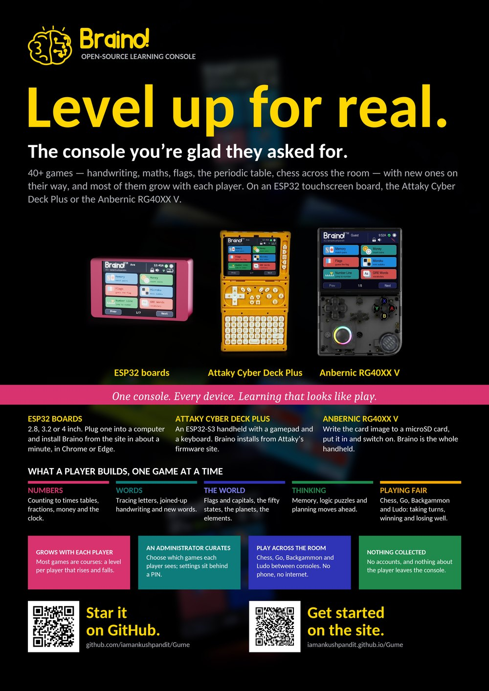
For a classroom or a hallway
“Level up for real.” What Braino is and the three kinds of device it runs on, for parents, teachers and players. Its QR codes open this page and the repository.
Download (PDF)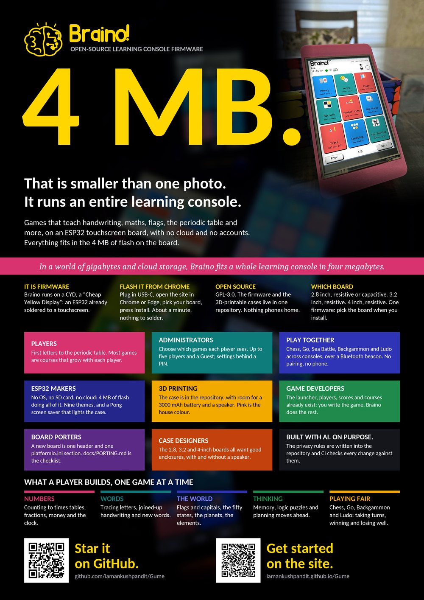
For a makerspace or a maker faire
“4 MB.” The engineering story: a whole console in the flash of an ESP32 touchscreen board, for makers and board porters. Its QR codes open the repository and this page.
Download (PDF)Privacy.
What it sends, and why.
No accounts, no tracking, and nothing collected about the player. Players and scores stay on the console. It only goes online if you give it Wi-Fi — to set its clock and to check for updates — and its Bluetooth is off until you switch it on. The same is true on every device. Every exception is listed below, exactly.
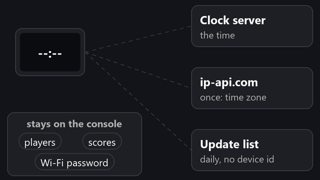
Wi-Fi
Optional, and used for the clock: an NTP server, plus one lookup to ip-api.com to guess the time zone on first connect. A daily check asks whether a newer firmware exists, and that request says nothing whatsoever about this device. Skip Wi-Fi entirely and nothing else changes.
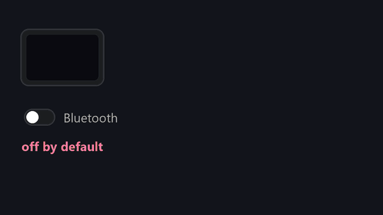
Bluetooth Low Energy
Off by default. Switched on, it advertises a device name and, on a board, two bytes of the factory Bluetooth MAC — and the device shows you a hex dump of the exact bytes on air, read back from the same buffer that was handed to the radio.
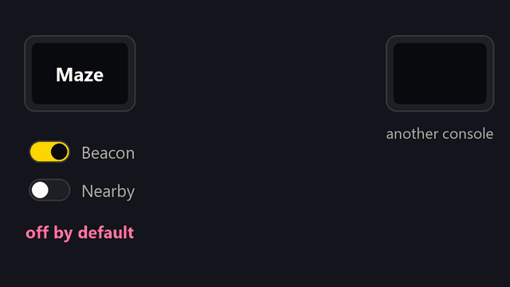
Nearby
A second opt-in on top of that, also off by default. The beacon then additionally carries which game is open and the best score for it. No player name, no profile name, nothing profile-scoped: a peer is four hex digits of its own hardware id and nothing else.
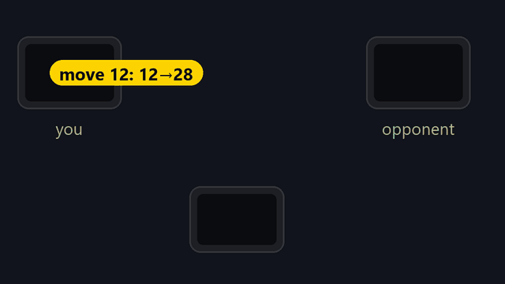
Games between consoles
Each console advertises its latest move: a session number, a move number and two small numbers saying what was played. Dice are never sent. It is a broadcast — anyone in range hears the moves — and every move received is checked against the receiver's own board before it is played.
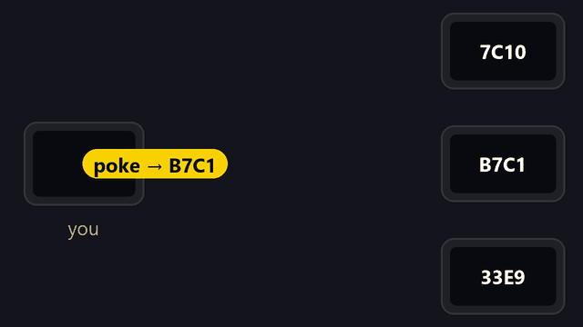
Poke
Rides the same beacon and adds no new kind of data: for a few seconds it carries the id being poked, which that console already broadcasts as its own name, and a counter. Every Braino in range hears it; only the one addressed reacts.
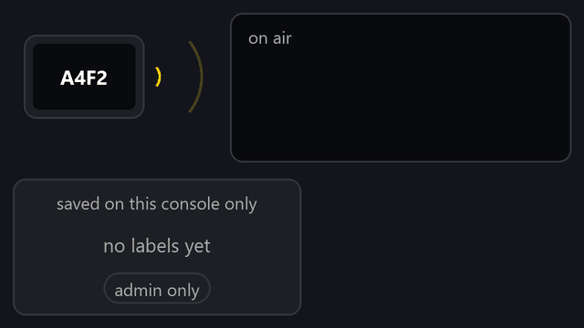
Local names for peers
Stay on the console that stored them. The administrator can label a tag they recognise so a poke says who rather than what; the beacon never reads that label, so what goes on air is identical whether every peer is named or none is.
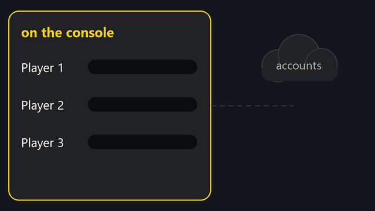
Scores and profiles
Live on the console — in a board's own flash, or on the handheld's card — and never leave it. There is no account to make, nothing to sign in to, and no way for anybody here to see how a player plays.
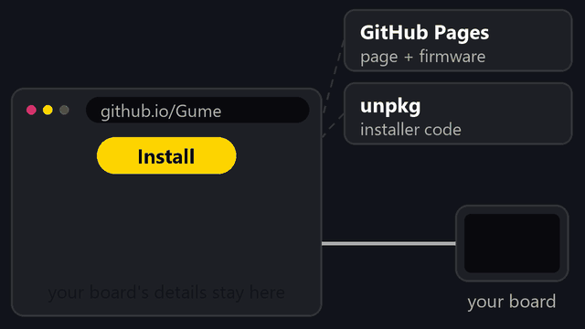
This page
Talks to your board over Web Serial, inside your browser; nothing about your device is sent anywhere. The firmware comes from GitHub Pages, and the Install button's code (esp-web-tools) from the unpkg CDN. Those two are the only requests this page makes on load — no analytics, no cookies, no fonts from anybody else.
The handheld
The card holds Braino and the Linux under it and nothing else: no shell, no login, no service listening, and no IPv6. The network is joined only when Braino starts Wi-Fi, and the only requests that leave are Braino’s own four. The Wi-Fi password and the administrator PIN are sealed on the card with a key the card does not hold, so a laptop that reads the card cannot read them.
Builders wanted.
The launcher, profiles, scoring, mastery tracking and spaced repetition already exist. You write the activity; Braino does the rest. Not sure yet? Open a discussion and think it through in the open.
Port a device.A new board is one header under include/boards and one section in platformio.ini; nothing under src names a GPIO. A new Linux handheld is a few lines in host/consoles naming its buttons. Braino only goes where it can be the whole device.
Design a case.The 3.2-inch and 4-inch boards would love a good enclosure, in speaker and no-speaker variants. Print notes and fastener sizes are as valuable as the mesh.
Built with AI.
On purpose.
Most of this firmware was drafted with AI coding tools, directed, reviewed and tested on the boards by one person, who is the author of record and answers for every line. That is stated in the repository’s NOTICE.md rather than in commit trailers, because a trailer is a claim of authorship and copyright that a tool cannot hold. The privacy contract — no telemetry, no accounts, nothing collected about the player, and exactly four requests that may leave the device — is written into the repository, and CI checks every change against it, whoever or whatever wrote it. Bug reports and code critique are especially welcome: open an issue, and if you can, say how you would fix it.
Get in touch.
An issue is the best place for anything about the firmware — it is public, it is searchable, and the next person with the same board finds the answer. For everything else, any of these reaches a person.